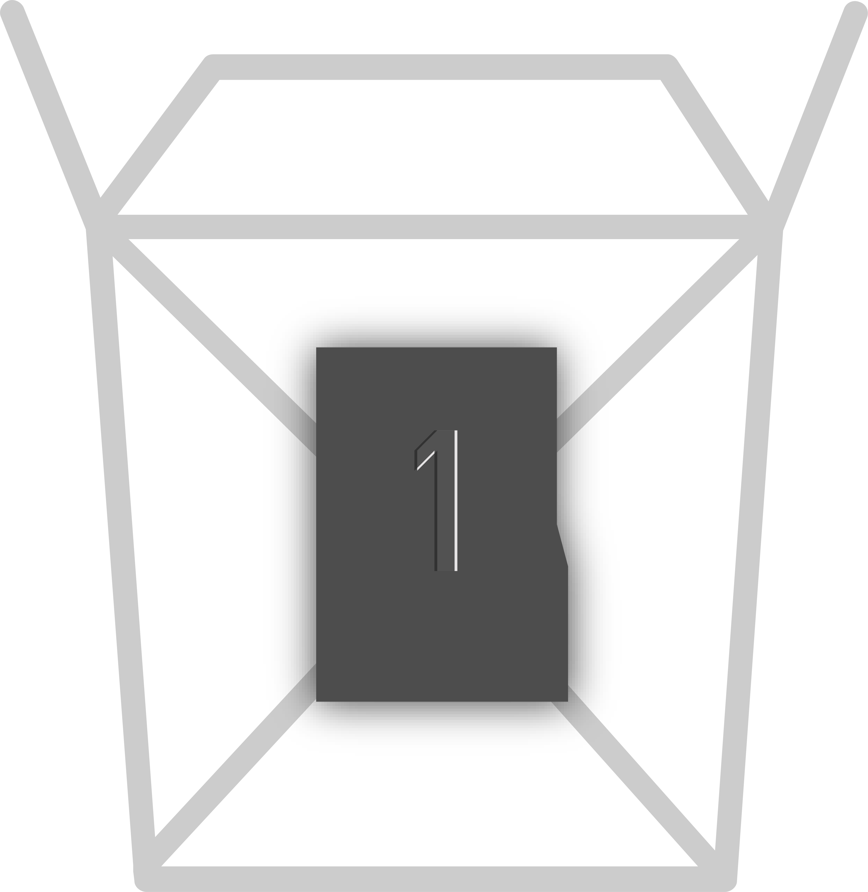
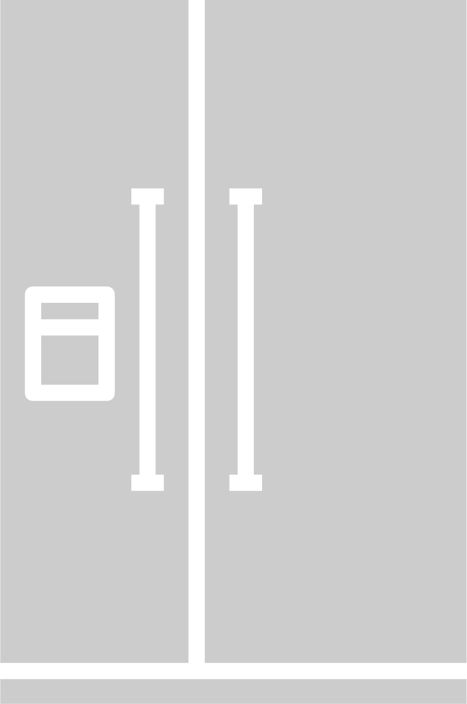

Combining the intuitive design of a kitchen timer with the smarts of a smart fridge, TagIt is simple yet very powerful.

30% of a millennial’s fridge is likely to be spoiled or forgotten about. Fast paced lifestyles lead to spontaneous eating out, sporadic cooking, and forgetting about food we have in our fridge.
TagIt is a sleek and modern dock that sits on your countertop. On it are a day selection dial, color coded smart tags, led indicator, and storage bays for each tag.
Twist
Simply pick up one of the tags from the dock, place it in the dial and turn it to number of days you want.

Tag
Stick the tag on your food container and put it in the fridge

Leave
Let TagIt remind you about your food when you set it to.
 The simplicity of TagIt is its beauty. What’s under the hood?
Each tag is a completely passive plastic piece. It is a 3d printed tag with reusable 3m tape. The identity of each tag is a unique resistance.
The dock contains the magic. It identifies each tag by resistance, can remember the days you set each tag to and sends all of this to your phone. The dock itself is modular expandable allowing you to add more colored tags or more tags for a particular color/category.
The dial is a potentiometer with resistance values assigned to different days. The storage bays and the dial contain copper pads and each tag contains copper contacts as well to be able to measure resistances and identify each tag.
The app sends smart reminders, reminding you about your food around dinnertime and reminding you about groceries when you head to the grocery store.
The simplicity of TagIt is its beauty. What’s under the hood?
Each tag is a completely passive plastic piece. It is a 3d printed tag with reusable 3m tape. The identity of each tag is a unique resistance.
The dock contains the magic. It identifies each tag by resistance, can remember the days you set each tag to and sends all of this to your phone. The dock itself is modular expandable allowing you to add more colored tags or more tags for a particular color/category.
The dial is a potentiometer with resistance values assigned to different days. The storage bays and the dial contain copper pads and each tag contains copper contacts as well to be able to measure resistances and identify each tag.
The app sends smart reminders, reminding you about your food around dinnertime and reminding you about groceries when you head to the grocery store.